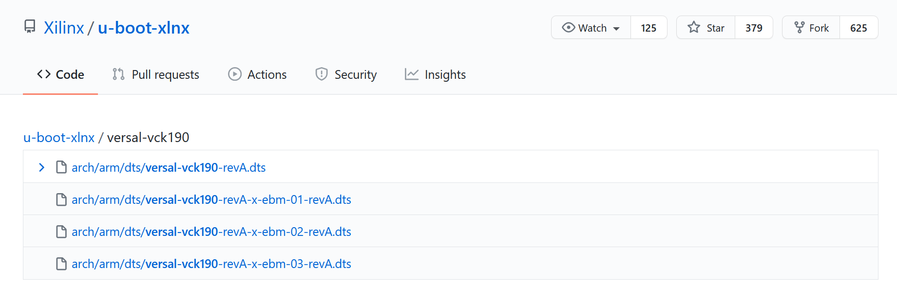

Versal カスタム プラットフォーム作成チュートリアル |
手順 2: PetaLinux でのソフトウェア コンポーネントの作成¶
この手順では、Vitis プラットフォームの必須コンポーネントを含む PetaLinux プロジェクトを作成します。
PetaLinux プロジェクトの作成¶
PetaLinux 環境を
source <petaLinux_tool_install_dir>/settings.shで設定します。前の手順で作成した XSA を使用して PetaLinux プロジェクトを作成します。
petalinux-create -t project --template versal --force -n petalinux cd petalinux cp <hw xsa> . petalinux-config --get-hw-description=. --silentconfig
注記:
作成される PetaLinux プロジェクト名は petalinux です。PetaLinux プロジェクト名は petalinux-create -n オプションで自由に変更できます。
petalinux-config --get-hw-descriptionには XSA が 1 つのみあるディレクトリが必要です。Vivado でエクスポートした XSA をローカル ディレクトリにコピーして、PetaLinux プロジェクトのハードウェア記述をアップデートします。この XSA はデバイス ツリー ファイルの生成に使用されます。通常はハードウェア XSA を使用します。ただし、ハードウェア エミュレーション XSA ファイルでも問題なく使用できます。どの XSA を使用するかは、実行するターゲットによって決定してください。ハードウェアとハードウェア エミュレーションの両方を実行する必要があり、それらの XSA が異なる場合は、別々にデバイス ツリーを生成する必要があります。次のリリースの PetaLinux は、ハードウェアとハードウェア エミュレーションの XSA を同時にサポートする予定です。PetaLinux 2021.2 では 6.0 以降の GCC バージョンが必要です。GCC のバージョンがこの要件を満たしていない場合は、[petalinux-config] → [Yocto settings] から [Enable buildtools extended] をオンにします。この設定にすると、PetaLinux ツールからコンパイル済みの gcc バイナリが使用されます。詳細は、UG1144 を参照してください。
ルート ファイル システム、カーネル、デバイス ツリー、および U-Boot のカスタマイズ¶
rootfs パッケージに XRT を追加します。
petalinux-config -c rootfsを実行します。コンフィギュレーション ウィンドウで、
/キーを使用して検索機能を開きます。xrtと入力して Enter キーを押します。検索結果ページで、
Symbol: xrt結果の数 (たとえば 1) を押します。XRT コンフィギュレーションで、
xrtの行に移動し、スペース キーを押してイネーブルにします。[Exit] を 2 回選択して、メインのコンフィギュレーション ページに戻ります。
rootfs config で [Image Features] を選択し、[package-management]、[debug_tweaks]、[auto-login] オプションをオンにし、変更を保存して rootfs コンフィギュレーションを終了します。
package-management 機能を使用すると、実行時にパッケージをインストールできます。これはオプションですが推奨されます。
debug_tweaks パッケージは、セキュリティ要件を削除し、デバッグをしやすくします。このパッケージは、デザインをプロダクション用にリリースするときに削除する必要があります。
[Exit] をクリックして Enter キーを押し、[user packages] を終了してルート コンフィギュレーション ウィンドウに戻ります。
[Image Features] を選択して [Enter] を押します。
Space キーを押して、[package-management] および [debug_tweaks] をオンにします。package-management のサブアイテムは必要ありません。
Exit
Exit
Save
EXT4 を SD カード ブートの rootfs ファイル形式として使用します (推奨)。
PetaLinux は、デフォルトで rootfs に initrd 形式を使用します。この形式は、DDR メモリ内の rootfs を抽出します。つまり、実行時に使用可能な DDR メモリが減り、再起動後に rootfs の変更を保持できないことを意味します。ルート ファイル システムで変更が保持できるようにするには、SD カード上の 2 つ目のパーティションとして rootfs に EXT4 形式を使用し、1 つ目のパーティション FAT32 にはほかのブートファイルを保存します。
petalinux-configを実行します。[Image Packaging Configuration] で [Root File System Type] に [EXT4] を選択します。

デバイス ツリーのカスタマイズ¶
VCK190 デバイス ツリーを適用します。
petalinux-configを実行します。[DTG Settings] をクリックします。
MACHINE_NAME オプション (コンフィギュレーション オプション名は CONFIG_SUBSYSTEM_MACHINE_NAME) に versal-vck190-reva-x-ebm-02-reva を入力します。
注記: このプリセット デバイス設定により、VCK190 ボードのデバイス ツリーにイーサネット PHY 情報が追加されます。デバイス ツリーのソース コードが PetaLinux プロジェクトに適用されます。VCK190 ボードのバージョンが異なる場合は、デバイス ツリーのソース コード ディレクトリにボードに対応するデバイス ツリーのバージョンがあるかどうかを確認し、PetaLinux プロジェクトで適用してください。git リポジトリをクローンしたり、GitHub のファイル検索機能を使用できます。

(オプション) システム ユーザーのデバイス ツリーを更新します。
特別な設定が必要なカスタム ペリフェラルがオンボードにある場合は、system-user.dtsi でアップデートしてください。
注記: PetaLinux 2021.1 からは、XSA タイプを検出し、デバイス ツリーで ZOOCL ノードを自動的に生成し、XSA がエクステンシブル XSA の場合は、XSA のハードウェア設定に従って割り込み入力番号を更新するようになりました。ユーザーが Vitis アクセラレーション用にデバイス ツリーを手動で変更する必要はありません。
PetaLinux イメージのビルド¶
PetaLinux プロジェクト内の任意のディレクトリから、PetaLinux プロジェクトをビルドします。
petalinux-build
PetaLinux ビルドでは、マシン上の複数の CPU コアを使用して、並列コンパイルを実行し、ビルド速度を向上させます。ビルド時間は、ビルド マシンのハードウェアの設定によって、30 分 ～ 1 時間以上異なります。
生成された U-Boot イメージと Linux イメージは、images/linux ディレクトリに保存されます。
sysroot をビルドします。
petalinux-build --sdk
sysroot sdk.sh は images/linux ディレクトリに生成されます。これは、次の手順で抽出します。
ファスト トラック¶
PetaLinux プロジェクトを再作成し、出力を生成するスクリプトが提供されています。これらのスクリプトを使用するには、次の手順を実行します。
ビルドを実行します。
# cd to the step directory, e.g. cd step2_petalinux make
生成されたファイルをクリーンアップするには、次を実行します。
make clean
Copyright© 2021 Xilinx